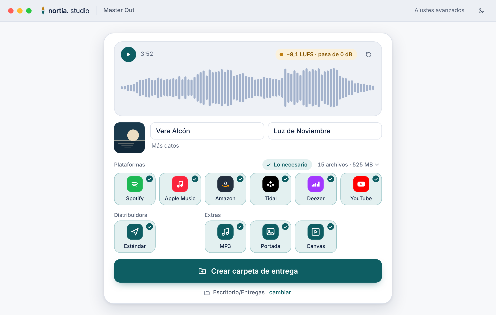
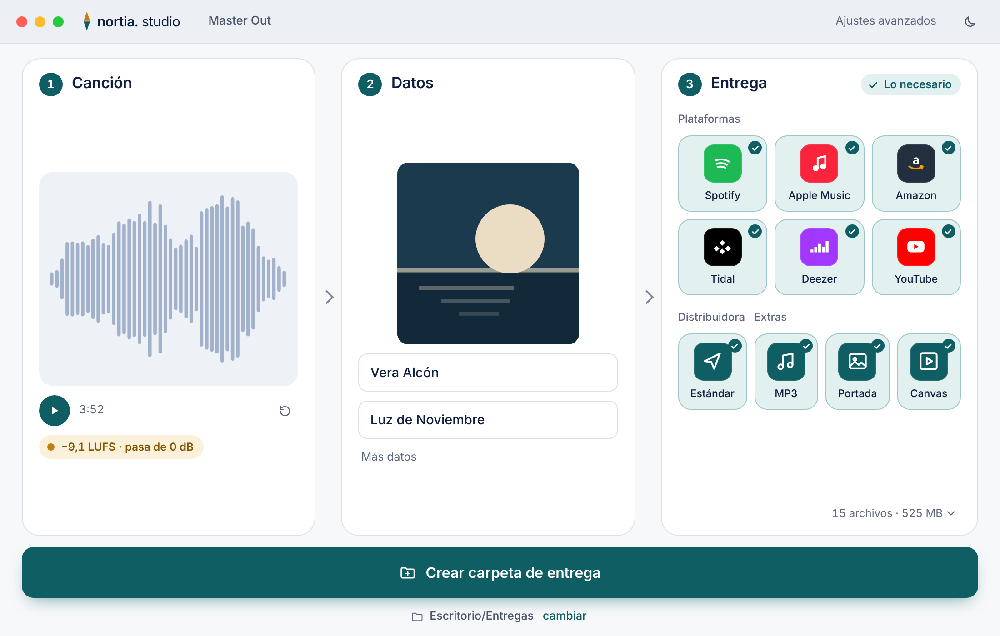

Master Out · D4 · dos variantes simples
Claro, 1100×700 (ventana mínima). Mismo contenido, distinta disposición.
D4a Una tarjeta
máster, datos, destinos, botón

D4b Tres pasos en fila
1 Canción · 2 Datos · 3 Entrega
